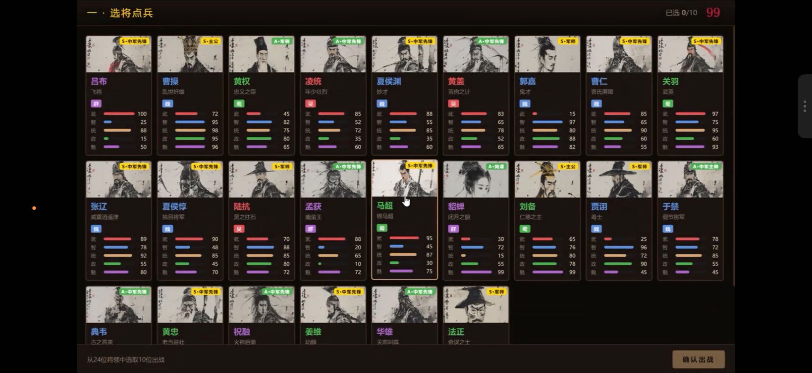
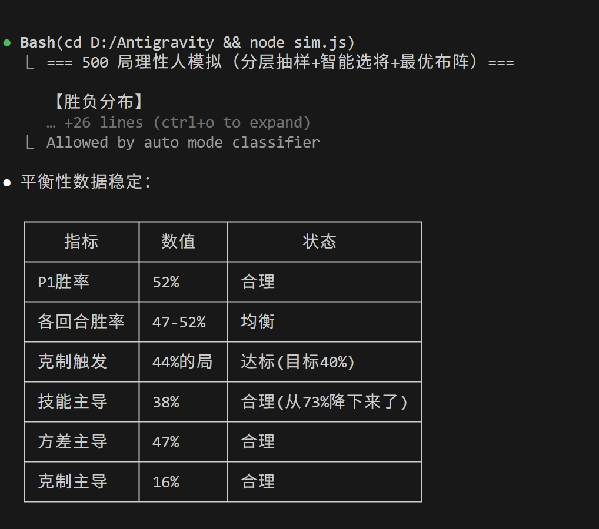
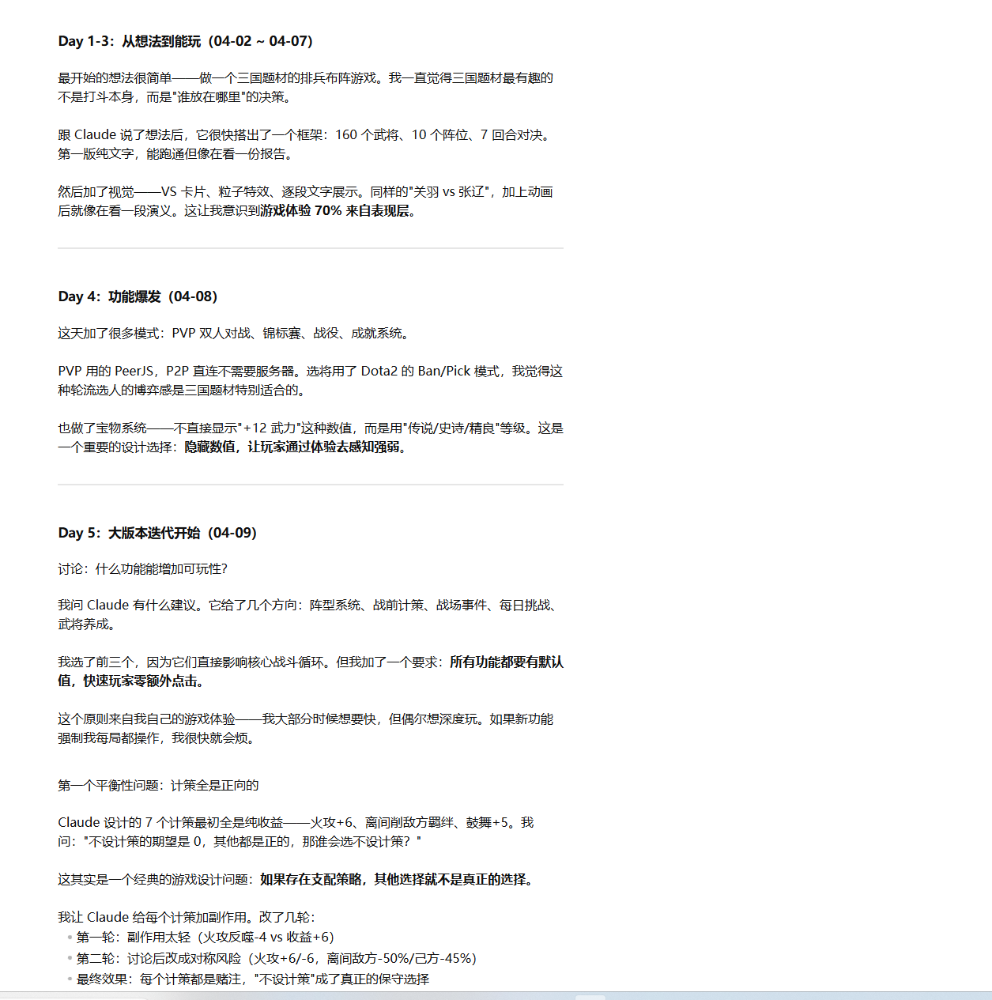
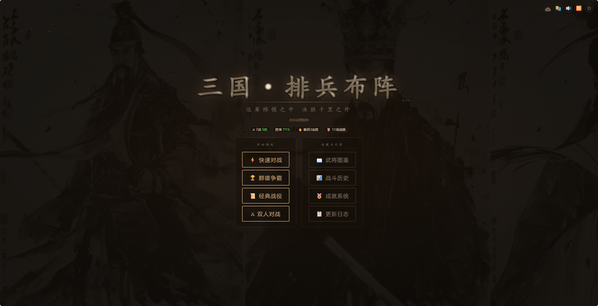
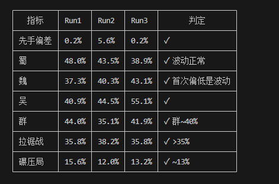
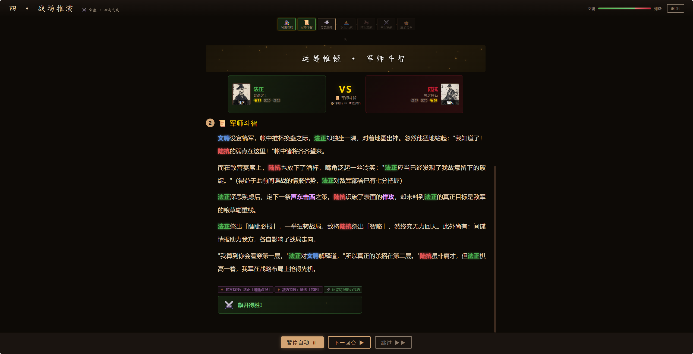
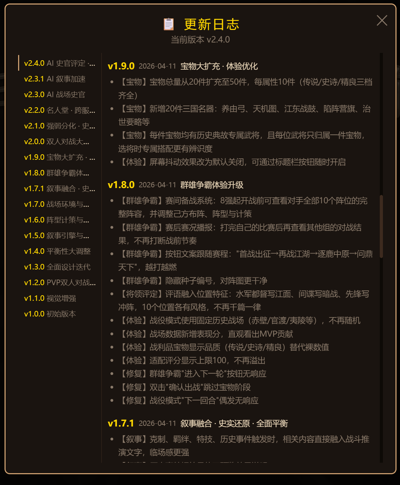

一个三国游戏
让我重写了自己的工作方式
两周，一个下班做的三国游戏。
做到一半我开始明白，我在调的不是游戏，是自己和 AI 共事的方式。
如果你手边也有一个"下班后的小项目"，千万别浪费它。
它可能是你这一年认知升级最好的训练场。
代码工人期
——我以为 AI 是个更快的实习生
那两天我挺飘的。真的，以为自己抓到什么了。
我把它发给朋友，自己跑去吃火锅。回来路上脑子里已经在构思"怎么包装一下发小红书"。
然后周日，朋友到我家，我兴致勃勃地打开游戏让他试玩。他玩了大概二十分钟，抬头看我：
朋友 好玩。但是——猛将流是不是有点太强了？而且曹操怎么感觉放哪都强？

我当时没当回事。这不就是数值调一下的事吗。
但那天晚上我在洗碗的时候，突然意识到一件不对劲的事：朋友指出的两个问题，AI 在写代码的时候从头到尾都没有提过。
它只是按我说的"做一个三国游戏"，把 160 个武将、10 个阵位、143 对克制关系、若干宝物和技能，全部如实地填进了代码。至于"周瑜会不会在 4 个位置都是 TOP3"、"曹操会不会因为五维总和高所以放哪都强"——这些问题它没有提，因为我没问。
沉淀物 · 01
不要只评估 AI 给出的东西。要主动问它没告诉你什么。
AI 不像实习生那样有"常识判断"。它不会在数值失衡的时候皱眉说"这不对吧？"。它只会如实地按你的描述把每一格填满。我才意识到：发问本来就是我的活，不是 AI 的。它只负责老实执行，边界在哪得我自己画。
- 做 stock-analyst-pro 的时候 AI 给我写了一个看起来很合理的 DCF 估值模块，代码跑起来了，公式也对。我的第一反应不再是"太棒了"——是"这个模型在历史数据上会出什么错？" 我拉了 10 个已经涨上去的股票回测，有 6 个估出来的"内在价值"比当时股价还低。模型是坏的，它只是看起来对。
这是我和 AI 共事的第一个教训。但我当时还没意识到——失控其实从第四天才开始。
失控期
——我发现自己在做一个
我看不懂的系统
周一晚上，我坐下来处理周日那两句反馈——猛将流太强、曹操放哪都强。
我的反应特别 PM——打开表格，锁定问题，一个个调。曹操放哪都强是因为五维总和高，那给他加个"主公位"的负向惩罚（penalty）压一压，不就好了？
改完，跑两盘。嗯，曹操老实了。
周三凌晨我收到消息："周瑜现在是不是有点离谱？"
我一查 posScore 矩阵——周瑜在 4 个位置都是 TOP3。我压根没动过他，但曹操被压下去之后，整个位置竞争格局就偏了。
然后是周四的关羽、周五的貂蝉……等我意识到的时候，我已经在同一份 Excel 里来回修改同一批人了。每改一处，别的地方塌一处。
那几天我才看清：我哪是在调参数，我是在搅一锅自己没看懂的汤。
那天我停下来，干了一件"不像做游戏"的事
我没再改数值。我去写了一个叫 simulate_battles.js 的脚本。
逻辑很简单：从 160 个武将里分层抽样 30 人（每势力至少 6 人），模拟 PVP 的 Ban/Pick 流程（Pick4/Ban2 交替 28 手），用匈牙利算法自动布阵到 10 个阵位，跑 7 回合战斗，共 500 局。输出：势力胜率、先手偏差、拉锯/碾压比例、每个阵位的 TOP3 / BOTTOM3。
第一次跑完，我盯着终端看了十分钟——

node simulate_battles.js——500 局理性人对战、分层抽样、智能选将、最优布阵。表面看一切还行：P1 胜率 52%、各回合 47-52%、克制触发 44%、技能主导 38%、方差主导 47%。但我把镜头往里推一层，看单个势力、单个武将的数据，画面就崩了。
前两天我凭感觉追着改的那几个人——曹操、貂蝉，连带一整个"群雄"——sim 给我打了三巴掌：
这三行数字让我彻底放弃了"靠感觉改数值"这件事。
沉淀物 · 02 · 三步法
不是一个脚本，是一套动作序列，后来我给它写进了 memory 和 Skill：
# 凡是有反馈链的产品改动，必须跑完这三步 第一步 500 局 PVP 模拟 → 拿胜率分布 第二步 posScore 矩阵 → 拿位置霸榜清单 第三步 TOP30 史实审查 → 拿"哪里违背了玩家认知" # 每改一处，必须全跑一遍。没有例外。
凡是有"反馈链"的产品，都需要一个本地模拟器。
反馈链的意思是：你的动作 → 用户的反应 → 系统状态变化 → 影响下一个用户的体验。游戏有。增长漏斗有。定价策略有。推荐系统有。CRM 里的审批流也有。
本地模拟器的意思也很朴素——拿我的 simulate_battles.js 拆开给你看：
- 造一批假用户。我从 160 个武将里分层抽 30 人，保证每个势力至少 6 个——等价于"造 500 个符合目标画像分布的假用户"。
- 让他们按真实规则动一遍。我让他们走完 Ban/Pick 28 手、匈牙利算法布阵、7 回合战斗——等价于"让他们走完完整的漏斗/审批流/下单路径"。
- 把结果聚合成几个可判的指标。我输出的是势力胜率、位置 TOP3/BOTTOM3、碾压局占比——等价于"转化率分布、哪类单据堵在第 3 步、毛利曲线"。
- 改一个输入，整套重跑。把曹操五维改掉一格，500 局瞬间跑完，看哪些指标动了、动多少。你得到的是因果，不是手感。
后来我在别的场景也这么干——做增长的时候写一个脚本模拟 1000 个用户按转化率走过漏斗，挪按钮换文案就是改系数重跑一次；做定价就跑 N 条需求曲线看毛利分布；碰 CRM 审批流就灌 500 条造出来的单据看哪条卡住了。没它之前我改完只能发出去等用户骂；有了它，我能先在自己电脑上骂自己 500 遍。
- 做 stock-analyst-pro 的时候 我不再让 AI "一次给我答案"。我要求它先把估值结果写成回测脚本，跑过去 5 年的数据，看历史准确度是不是比随机基准好。答案必须是分布，不是点估计。
- 做 CRM PRD 评审的时候 我开始逼自己列"这个功能上线后，哪些存量用户的状态会变"。不是测试用例，是反馈链推演。这后来变成了《PRD 需求细节规范化》Skill 的底层结构。
那几天我没写一行游戏代码，但我给自己装了一副以后看所有产品都会用到的眼镜。但眼镜还不够——我很快发现，AI 每次对话都会忘记我教过它的东西。
沉淀期
——我发现 AI 会忘，
但我不能
那是一个周二晚上，我在给游戏加"锦标赛"模式。我熟练地打开对话框："帮我在锦标赛模式里也支持阵型选择。"
AI 给了我一段代码，跑了。第二天我又加了"战役模式"，AI 又给了一段代码，也跑了。
然后有玩家告诉我：战役模式里，AI 对手不会选阵型。
我一查——阵型数据只在 startGame()（快速对战入口）里被初始化。锦标赛、战役、PVP 三个模式的入口，三次都被漏了。
更气人的是，这已经是我第三次踩这个坑了。第一次是计策，第二次是宝物，这次是阵型。每次都是"我以为加了"，每次 AI 都"看起来加了"。
我对 AI 发火没用——它根本记不住上次的对话。
那天我才意识到一件事：AI 没有记忆，但我会反复走进同一个房间。
我停下来，没改代码，写了一份"给未来自己的备忘录"
文件名：feedback_multimode_check.md。内容三行：
每次新增影响战斗的功能，必须检查 4 个模式入口都接入了： startGame() / initTournament() startCampaignStage() / pvpAfterFormation() # Why: v1.6 阵型系统漏了 3 个模式，AI 不选阵型，玩家选择丢失 # How: 每次新增 G.xxx 全局变量，grep 确认 4 个入口都有赋值
然后我塞进了 ~/.claude/memory/。下次任何关于三国游戏的对话，AI 都会先读到这份备忘录。
这一刻我脑子里"咔"地响了一下。
我之前一直以为"提示词工程"是在研究怎么把一句话写得更精准。那天我才明白——劲儿不是使在那一句话上，是使在 AI 每次开口前，它先读到了什么。
那几天我做的事，一件跟代码都没关系
- 建了
three-kingdoms-principles.md：11 条设计原则（叙事沉浸 > 数值深度、隐藏数值展示体验、每个角色都有自己的春天……） - 建了
three-kingdoms-balance.md：平衡性三步法 + 目标区间表 - 建了
feedback_multimode_check.md、feedback_balance_audit.md、feedback_changelog_update.md - 建了一条规矩：每次对话结束，AI 必须把这次的改动追加到 Obsidian 里的开发日记，一行不少
我把这堆东西叫"外挂大脑"。

一个周五深夜的画面
我在重启一个新对话，问 AI："你能帮我看看现在势力平衡性怎么样吗？"
它沉默了两秒，然后回我：
根据three-kingdoms-balance.md，我应该先跑simulate_battles.js500 局，检查势力胜率是否在 40% — 55% 区间。开始了。
我一个字都没教它。
那一刻我意识到，我不是在教 AI 做这个游戏。我是在把"如何做这个游戏"这件事本身变成一个可复用的东西。
另一件我从此再也没停过的事：让 AI 代入视角帮我找茬
memory 是让 AI "记得我做过什么"。但我很快发现还有另一个动作，杠杆更大——让它代入一个具体视角，主动来挑我的毛病。
比如我会跟它说："你现在是一个第一次打开游戏的新玩家，把你 30 分钟里觉得困惑、别扭、没必要的地方都列出来。"或者："你是一个锦标赛老玩家，你最讨厌这个版本的哪三件事？"
它不会像我自己那样自我辩护。它会真的把问题列出来，还按优先级排好。

这个流程对我来说已经变成肌肉记忆了。任何一个项目我都会定期跑一次："你是 [某类用户]，找茬。"然后按它给的清单动手。
AI 不是只能当个会写代码的工具人。它是一组可以随时切换的视角——只要你会让它切。
沉淀物 · 03 · 外挂大脑 + 代入视角
我自己摸出来两件事：让 AI 有记忆，也让它 有视角。
记忆就是让它记得我做过什么——不是记在我脑子里（会累会忘会被新项目盖掉），不是扔在文档里（下次对话它不会自动翻出来看），而是放在一个它每次开口前都会先读一眼的地方，并且写成结构化的（有 Why 有 How to apply，不是一堆散文）。所以我现在 memory/ 下面有 56 个文件——对我来说更像随身带着的笔记本，不是归档。
视角就是让它替我挑刺——我一个人只能从 PM 视角看自己的产品，但 AI 可以随时换成"第一次打开游戏的新玩家"、"最资深的老玩家"、"一线客户经理"、"合规审查员"……它不会像我那样替自己辩护。记忆解决的是"AI 会忘"，视角解决的是"我会偏"。两件事我都在干。
-
做 stock-analyst-pro
踩了三次 yfinance 数据的坑之后，我写了
feedback_stock_data_gotchas.md。现在每次让 AI 动估值代码前，它会先读这份清单。 -
做 CRM PRD 评审
我把"PRD 必须覆盖哪些细节"写成了
project_prd_detail_standards.md。新 PRD 上传，AI 10 秒给我缺漏清单；再让它"代入一线柜员视角"跑一遍，又能翻出一批"业务实际执行会卡住"的问题——这是我自己坐在办公室里列不出来的。 -
用户画像
user_team_role.md、user_finance_learner.md——告诉 AI "我是谁、我懂什么、我在学什么"。它不会再给我讲基础概念，也不会假设我懂某个我其实不懂的术语。
这几天我没写新功能，但我在自己和 AI 中间架了一座桥。以后我们不用每次都从零开始。这还不算终点——第二周有一天，我做了件当时没太在意、后来看挺关键的事。
杠杆期
——我把自己复制了出去
大约第 12 天的时候，游戏基本稳定了。朋友们玩得起劲，平衡性也调到了目标区间。按理说这是一个自然的终点。
但那天我干了件奇怪的事：我给"平衡性审计"这个动作，写了一个按钮。
准确说，是一个 Skill——说白了就是给 Claude 写的一个快捷动作。触发词是"审计平衡性"。每次我说这四个字，它就会自动：
- 启动一个 Explore Agent 读取游戏代码里的数据（160 个角色、20 件宝物、143 对克制关系、10 个阵位权重）
- 跑 6 项量化计算：战力排名 Top20、宝物专属分布、阵营均衡、翻盘概率、随机 Ban 影响、宝物影响度
- 输出一个带 Pass / Warning / Fail 的判定表，Fail 项附具体修改建议（改哪个角色的哪个值）
从那天起，我再也没"感觉过"平衡性了。我说"审计平衡性"，它给我一张表。

当时没觉得，回头看比我以为的要重要
之前我一直以为自己在"做游戏"。
写了这个 Skill 之后，我突然看清楚一条曲线：
每一级都比上一级杠杆高一个数量级：
- 第 1 级：你做一次
- 第 2 级：你做 100 次但省了手动（脚本化）
- 第 3 级：AI 替你做 100 次，但每次你要引导（知识化）
- 第 4 级：AI 识别出情境自动做 100 次（产品化）
说实话，一年前的我一直停在第 1 级。走到第 3 级之后，节奏就已经不太一样了；到第 4 级之后，我自己都有点不认得之前那种工作方式。
一个周六下午的画面
我在写股票分析工具，分析一只我看不懂的股票。
我打开对话框，敲下："这只股票值不值得看。"
AI 沉默了两秒，然后：
检测到股票分析请求。我会启动stock-analyst-pro：拉取过去 5 年财报、跑 DCF 估值（使用你在估值参数规则里定义的保守参数）、对比行业中位数、回测历史估值准确度。预计 2 分钟。
我一个字都没教它"怎么分析股票"。
那一刻我意识到，三国游戏教我的那件事，正在我所有其他项目里重演：
- 平衡性审计 Skill → 给游戏用
- stock-analyst-pro Skill → 给股票分析用
- PRD 检查 Skill → 给 CRM 需求评审用
- 英语打卡检测器 → 给日常自律用
- 飞书文档生成器 → 给团队知识沉淀用
每一个都是"一次性解决 → 流程化 → 知识化 → 产品化"这条曲线上的点。

我自己给自己定的一条规矩：重复三次以上的事，都拖上这条曲线再说。
不是"有空再优化"，对我来说爬曲线本身就是工作的一部分。时间我主要花在两件事上：一是做新东西，二是把已经做过的那件事往曲线上挪一级。游戏对我来说就是个"训练场"——低风险、反馈快、没人催，我能在里面把这四级都走一遍。回到别的项目，其实就是在复用这套肌肉记忆。
游戏还没做完，
但我做完了
这个三国游戏现在还在迭代。玩家在加，功能在加，平衡性还在微调。
但对我来说，它早就不是一个游戏了。
它是我 2026 年所有项目的底层源代码。

每次我打开一个新项目——不管是分析股票、评审 PRD、搭 CRM 看板、做英语打卡检测器——我都会下意识地问自己四个问题：
- 我的改动会牵动下一批用户吗？（如果会，先在自己电脑上跑 500 遍）
- 我已经踩过哪些坑？（如果坑重复，写进 memory）
- 这件事会重复做吗？（如果会，流程化）
- 它可以再往上走一级吗？（如果可以，Skill 化）
这四个问题，全是游戏教我的。
写这篇不是想说"我做了个游戏"。是想记下来：我手边这个下班后的小项目，比我原本以为的值钱得多——它把我这一年跟 AI 共事的方式，整个换了一遍。
更可能是那个把自己的判断力慢慢沉淀下来、
每天都往杠杆曲线上挪一小格的人。